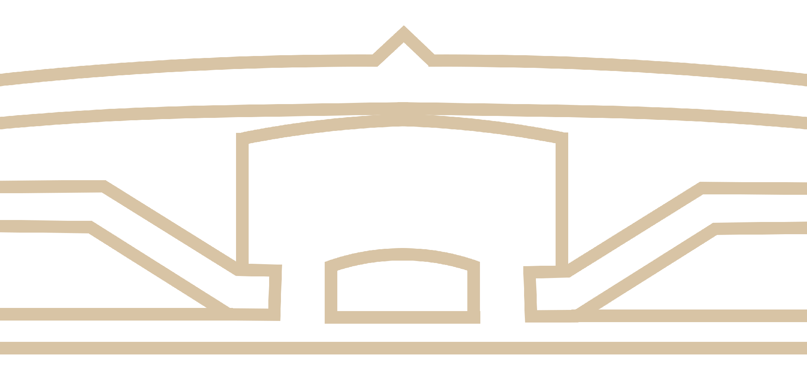

Государственное объединение «Белорусская железная дорога» расположено по адресу: ул. Ленина, 17, 220030, г. Минск.
Режим работы: с 8.00 до 17.00, обеденный перерыв с 12.00 до 13.00, выходные дни: суббота, воскресенье.
Вышестоящей организацией Белорусской железной дороги является Министерство транспорта и коммуникаций Республики Беларусь.
В соответствии с Законом Республики Беларусь от 28.06.2022 № 176-З «Об изменении Закона Республики Беларусь «Об обращениях граждан и юридических лиц» со 2 января 2023 года подача электронных обращений в государственное объединение «Белорусская железная дорога» и в организации, входящие в его состав, осуществляется посредством государственной единой (интегрированной) республиканской информационной системы учета и обработки обращений граждан и юридических лиц на сайте https://обращения.бел/.
Запись на приём по телефону 8 (017) 225 40 09
Начальник государственного объединения «Белорусская железная дорога»
Веренич Валерий Емельянович
Личный прием: первая среда месяца с 8.00 до 12.00.
Первый заместитель Начальника государственного объединения «Белорусская железная дорога»
Хорошевич Александр Анатольевич
Личный прием: вторая среда месяца с 8.00 до 12.00.
Заместитель Начальника государственного объединения «Белорусская железная дорога»
Стоцкий Петр Васильевич
Личный прием: третья среда месяца с 8.00 до 12.00.
Заместитель Начальника государственного объединения «Белорусская железная дорога»
Быцкевич Владимир Иванович
Личный прием: четвертая среда месяца с 08.00 до 12.00.
Заместитель Начальника государственного объединения «Белорусская железная дорога»
Николаюк Андрей Сергеевич
Личный прием: первый понедельник месяца с 14.00 до 16.00.
Главный инженер государственного объединения «Белорусская железная дорога»
Новодворский Сергей Александрович
Личный прием: второй вторник месяца с 14.00 до 16.00.
Заместитель Начальника государственного объединения «Белорусская железная дорога»
Козловский Игорь Анатольевич
Личный прием: четвертый четверг месяца с 14.00 до 16.00.